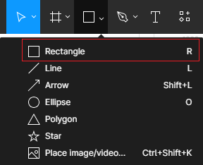

arrow_circle_up
Alapvető dolgok:
-
Hozzunk létre egy teljesen új tervezetet (draft). Helyezzünk el a vásznon (canvas) egy keretet (frame). Ezt
kétféleképpen tehetjük meg.
- Az eszköztár segítségével.
-
Megnyomjuk simán az A-, vagy az F-billentyűt a
klaviatúrán.
A keret egyfajta gyűjtőeleme több más elemnek. Nevezik még
rajztáblának (artboard) is.
-
A jobboldalon megjelenik néhány beépített sablon, amelyek
közül szabadon választhatunk.
-
Létrehozása után a következőre módosul a Figma tervező
felülete.
-
Az elemet kijelölve a
Delete gombbal törülhetünk
leggyorsabban.
-
Helyezzünk el egy téglalapot a keretben. Ehhez is két
módszer létezik.
- Az eszköztár segítségével.
-
Megnyomjuk simán R-billentyűt a klaviatúrán és
rajzolunk.
-
Tökéletes négyzet (kör, sokszög) rajzolásához szerkesztés
közben folyamatosan tartsuk lenyomva a
shift billentyűt.

-
A téglalap baloldalán és fötötte látható egy-egy kék
szaggatott vonal.
-
Ezek segítségével pozícionálja a Figma a kereten
belül.
-
A keret átméretezése után mindig ennyire lesznek az
adott oldaltól. Ha kell széthúzza, vagy összenyomja
a Figma a téglalapot.
-
A tervező táblán látható
Constraints mezőben
állíthatom be a kívánt oldalakat.
-
A tervező táblán látható
Alignment mezőben
állíthatom be hová igazítsa a téglalapot a keretben
a Figma.
-
Láthatjuk még a téglalap bal felső pontjának a
koordinátáit, valamint a fizikai méreteit
szélesség - width (w)
és
magasság - height (h).
- Sarkok lekerekítése és elforgatás beállítása.
-
Poligonok csúcsszámának beállítása a
count gomb szabályozásával
történik.
-
Az alakzatok szerkesztői módjába az alakzaton való dupla
kattintással vagy az alakzat kijelölése után az
enter gomb lenyomásával
juthatunk.
-
Látható, hogy egy kicsit megváltozott az eszköztár (toolbar). Eltűnt pár elem, de megjelent néhány a vektorgrafikákkal
kapcsolatban.
-
A pontokból összerakott polinomot Bezier görbékké
alakító elem (balról az első).
-
A Paint bucket elem,
amellyel a vektorgrafikák különböző részeinek
adhatunk más-más színt (a középső elem).
-
A Done gomb, amellyel
véglegesíthetjük a változtatásokat.
Módosúlt a Design pane is,
megjelent a hajlításokért felelős
No mirroring legördülő lista.
-
Az alakzatok szerkesztéséhez a kis négyzet ikonnal is
eljuthatunk. Példák vektorgrafikákra.
-
Vektorgrafikákat a tollal (pen),
míg szabadkézi rajzokat a a ceruza (pencil) elemmel tudunk készíteni.
-
Új elemként a vonalvastagsággal és töredezettséggel tudunk
játszani.
-
Szövegdobozt elhelyezni a T betű lenyomása után a kurzor
segítségével tudunk. Azután a szöveget a szokásos módokon
formázhatjuk.
-
A szövegdoboz és a szöveg egyidejű formázásához jelöljük ki
a szövegdobozt, majd a
shift gomb lenyomása után a
szöveget.
Források:
Figma
Wikipedia